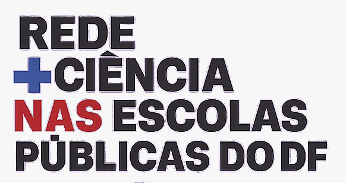

Ciência, tecnologia e aprendizagem mão na massa conectando universidade, professores e estudantes das escolas públicas do DF.
- 15 escolas
- Educação básica
- Educação
- Ciência + Tecnologia
- Edital aberto
Acontecendo agora
Atividades, disciplinas e ações que estão acontecendo neste momento na Rede Mais Ciência.
Editais abertos
Oportunidades atuais para participar das ações da Rede Mais Ciência.
Nenhum edital aberto no momento
Acompanhe esta página e nossas redes para novas oportunidades.
O que a Rede já trabalhou
Algumas das ações já desenvolvidas na construção da Rede Mais Ciência.
- Visitas às escolas Conhecimento das escolas, espaços e infraestrutura que recebem as ações da Rede.
- Laboratórios mão na massa Planejamento e organização dos espaços de audiovisual, fabricação digital e robótica.
- Kits de Robótica Montagem e preparação de kits de robótica e eletrônica utilizados nas atividades.
- Materiais pedagógicos Produção de cartilhas, orientações e guias de equipamentos e tecnologias.
- Formação e oficinas Atividades de formação, planejamento e apoio a professores e estudantes.
- Comunicação da Rede Página do projeto, mídias sociais, identidade visual e canais de comunicação.
Áreas que colocamos em prática
Conheça as cinco frentes trabalhadas nas atividades formativas da Rede Mais Ciência.